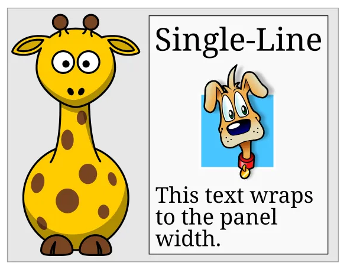
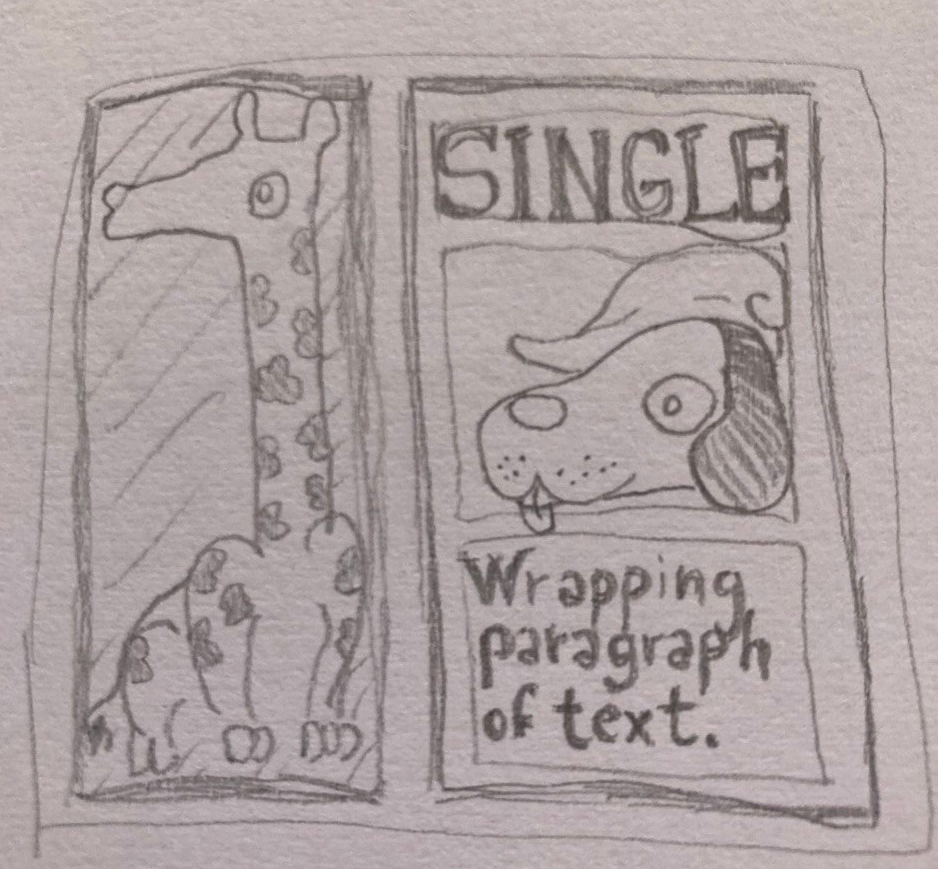
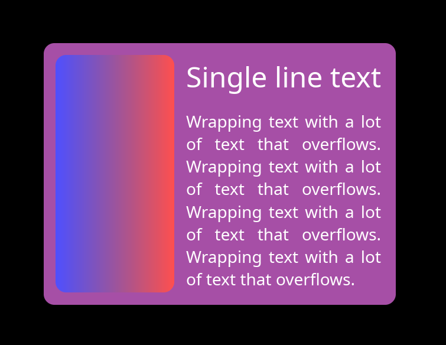

A New GUI Layout Algorithm
Earlier this year I wrote a blog post about an experimental layout algorithm that I was trying for Keru, my GUI library. After some more experimentation, I found a way to rewrite the algorithm that keeps all of the good properties of the previous one, but is also much faster. According to a benchmark that I forked from marc2332, it's now one of the fastest layout libraries out there.
This time, I made a separate crate for it, and I'm rewriting the blog post to keep the background explanation but describe the new faster algorithm, include a link to the benchmark data, and talk a bit about incremental relayout.
What's wrong with existing layout algorithms anyway?
Traditionally, GUI layout was more of an art than a science: a layout library would offer some layout primitives that the user can compose, but when it comes to solving them into real rectangle coordinates, it usually makes no real promises. It's sort of common to do a fairly half-hearted attempt, give out an inconsistent answer, and declare that particular layout unsupported.
The enlightening example is this innocent-looking giraffe layout, taken from this blog post by Edaqa Mortoray:

In this layout, the multi-line paragraph fits to the width of the single-line label. The giraffe fills the height of the whole right section, and its width is half of its height, to preserve the aspect ratio of the bitmap image. As it turns out, most algorithms struggle with this.
For example, the clay algorithm can't solve this case. If you write it in the obvious way, CSS won't solve it properly either: the giraffe stays at zero width. With enough nudging, for example if we set writing-mode: vertical-lr on the giraffe and on the h-stack, you can convince the CSS engine that this really matters for correctness, and it will solve it properly (thanks Nico Burns for figuring this out). But vertical-* is the writing mode used for vertically-aligned text runs, like in Mongolian and traditional Chinese and Japanese: it's fair to say that most users wouldn't think of resorting to this to get an aspect-ratio to work properly.
To be clear, I don't think this is necessarily a huge problem: especially in the case of clay there's nothing wrong with sticking to a simpler and faster algorithm if it works for the intended application. There's plenty of GUI programs that work great without any advanced layouts of this kind and don't run into any of these issues.
However, it's not uncommon to hear people complaining about the unfriendliness of layout systems. If it was possible to find a more general solution that worked in a more consistent and predictable way without surprises, it might go a long way towards making the system feel more reliable and user-friendly.
My interpretation of these limitations is that they come from the fact that most layout algorithms work by traversing or recursing on the real UI tree, jumping from parent to children or vice-versa. But the dependencies in the giraffe example just don't line up with the tree. As the original giraffe blog post notes, solving an arbitrary dependency graph by doing multiple passes until everything is solved leads to exponential complexity, so the algorithms cut some corners. Unless we can convince CSS that it might break Mongolian text if it doesn't honor our layout exactly, sometimes it will just give up.
To understand what was going on, I tried drawing the giraffe on paper and asking myself what an ideal layout engine would do to solve this layout properly.

It turns out that there's a pretty straightforward dependency chain:
- The single-line text determines the width of the v-stack on the right.
- The wrapping text fills the width of the v-stack, and determines its height by wrapping.
- The heights of the single-line text and the wrapping text sum up to determine the height of the h-stack.
- The giraffe fills the height of the h-stack, and determines its width by aspect-ratio.
- The widths of the giraffe and the v-stack sum up to determine the width of the outer panel.
The Algorithm
The solution is to come up with an algorithm that traverses this dependency chain and solves the sizes in that order, directly.
Conceptually, these layout dependencies form a graph. Simplifying a bit for now, every graph node is a (NodeID, Axis) pair, and each dependency is an edge in the graph:
{ dependent: (NodeID, Axis), depends_on: (NodeID, Axis) }.
The previous version of the algorithm would go through all UI elements in the tree and write down all the edges. For example, a UI element with size_x = Fill would push a dependency on the X size of its parent, or if it had size_x = FitContent, it would push a dependency on the X size of each of its children.
Then, it would solve the graph using what I later found out was called Kahn's algorithm.
While this wasn't the fastest way to do it, it worked, and having an explicit list of edges was quite useful for debugging. For example, the edges could be displayed as a real graph using standard tools like graphviz.

The Fast Algorithm
Later, I found that there's a faster version of this algorithm, and it's even simpler than the explicit one:
- Go through all nodes in any order and call a
solve(node)function to solve it. - In
solve(node), first callsolve_all_dependencies(node). - In
solve_all_dependencies(node), recursively callsolve(dependency)for every unsolveddependencythatnodewill have to read to compute its own layout. - After the recursion, calculate
node's own layout.
That's it! This is enough to ensure that the algorithm will solve all the nodes in the correct dependency order. But in this way, there's no need for a separate pass that writes down the edges explicitly.
Of course there's nothing new about this approach either, you can find it described on the Wikipedia page on topological sorting in the "depth-first search" section, right below the section on Kahn's algorithm. But sometimes just knowing about these things is not enough, you have to live it.
Cycles
With the depth-first search algorithm, dealing with cycles is also quite straightforward. When we first visit a node, we can set an IN_PROGRESS flag on it before recursing on its dependencies. Then, if we visit a node that already has the IN_PROGRESS flag, that means that it's in a cycle. Instead of silently giving the user a broken or inconsistent layout, we can give them a loud warning with an accurate list of all nodes that were stuck in a cycle. Of course, we can still pick a fallback value for the node in the meantime.
Different kinds of sizes
The next step in sophistication for the layout algorithm is to support maximum and minimum sizes. To do this, we expand the graph: instead of a (NodeID, Axis) pair, every graph node is a triplet of (NodeID, Axis, SizeType), where SizeType can be Min, Max, Regular or Final. UI elements with a min and max size on any axis will get all four graph nodes, and the Final node will depend on all the other three.
When min and max sizes combine with some of the most complex cases of stack containers, this actually ends up complicating the picture quite a bit. Eventually, we also have to add some other kinds of more abstract SizeTypes, representing some partial calculations that the stacks have to do.
However, it turns out that the graph approach can deal with all of these complications, as long as we write down all the dependencies correctly. For this reason, I won't go into the details. If you are skeptical about this system's ability to solve any specific layout problem, let me know, and I'll try it.
Performance
As mentioned before, I added keru_layout to a benchmark from marc2332. In this benchmark, keru_layout is the fastest or close to the fastest in all the categories that it supports.
While other libraries have their strengths and their weaknesses, keru_layout is consistently fast in all cases. It's likely that this comes from an intrinsic advantage of the algorithm: the other libraries are probably faster when their top-down or bottom-up traversals of the UI tree happen to line up with the real structure of the dependency graph, and slower when the shapes don't match as well. By traversing the dependency graph directly, the new algorithm has more consistent performance across many different cases.
Incremental Relayout
The library also supports incremental relayout for non-structural changes to cycle-free layouts. The algorithm is a bit different than the one used for the full solve, but the dependency graph approach is still very useful. In short, from a list of changes to the UI elements' numerical values, the algorithm starts by solving each of them, pushing all of its dependents to a solve queue (rather than its dependencies), then continues until the queue is empty. To avoid duplicated work in the case where multiple changes "flow" into the same node, the queue is organized with one bucket per "level", or the longest distance in the dependency graph from a dependency-less "source" node. Then, the solver always solves the dirty nodes with a lower level before the ones with a higher level.
While it's a nice algorithm, in practice the case for incremental relayout gets weaker when the full layout is already quite fast. There's a lot more integration work required to get incremental relayout working compared to the simple full relayout case, and the surface area for integration bugs increases by a lot when the user is expected to report all changes to individual UI elements to the layout library rather than simply letting it read its tree and solve it.
Even ignoring the integration complexity, the only case when incremental relayout really sounds attractive is in programs where the users are doing a lot of dragging and resizing, which forces a relayout on every display frame at 60 or 120+ Hz. Still, even in this case it's likely that the work saved by incremental relayout would be overshadowed by other per-frame costs such as rendering, unless those are optimized for incremental changes as well.
As a general principle, software is slow and complicated enough that for now it's probably a good idea to first try the optimizations that remove complexity, and only consider the ones that add complexity in a second step, if we're still unhappy with how fast it's going.
Thanks For Reading
This layout system is one of the most interesting things I've worked on, but it's a fairly small and recent addition to Keru, which aims to be a full featured and usable GUI library.
If you are interested, check out Keru's Github page, or the other posts in this blog.